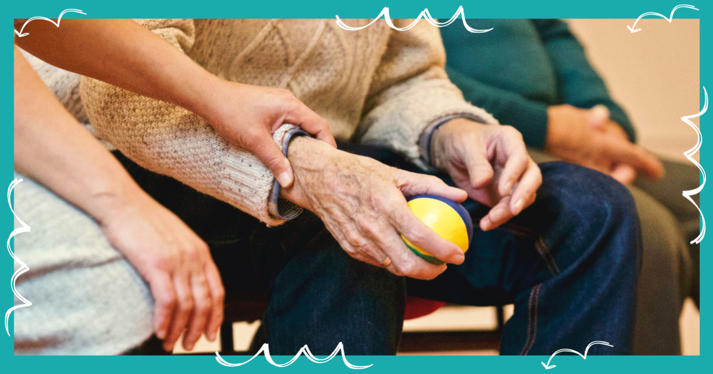
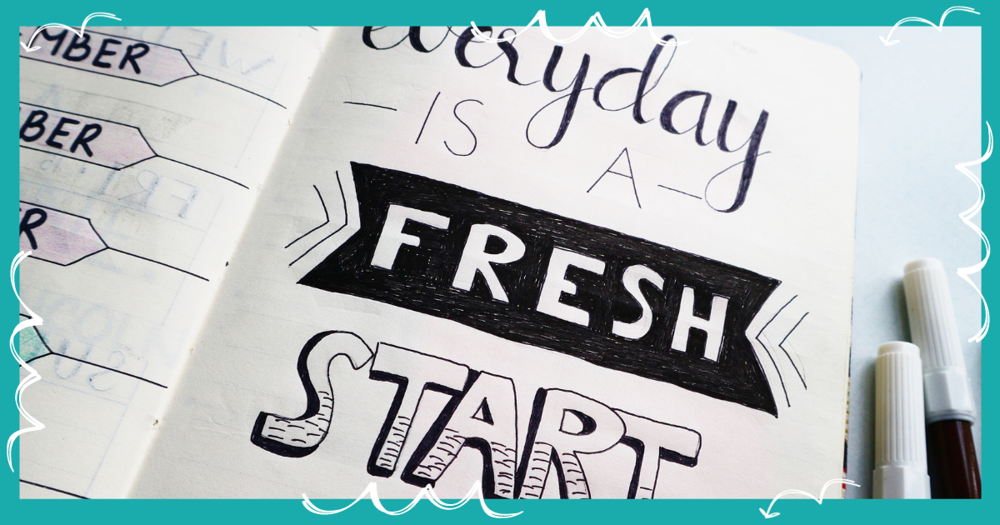

Welcome to Health and Wellness Hub
"Welcome to Health and Wellness Hub, your one-stop destination for a healthier and happier life. We are thrilled to embark on this journey with you, where we explore the profound connection between health and wellness. Our mission is to inspire and guide you toward a lifestyle that prioritizes well-being, both physically and mentally.
At Health and Wellness Hub, we believe that a life of vitality and balance is within reach for everyone. Whether you're seeking expert fitness advice, mind-stimulating activities, or a supportive community to share your health journey, you've come to the right place. Join us in discovering the transformative power of health and the endless possibilities it brings. Together, we'll nurture not only your body but also your mind, ensuring that every day is a step toward a brighter and healthier future."
Why Health is More than Wealth in 2023?
In 2023, the pursuit of health has never been more crucial. Our fast-paced lives demand more from us than ever before, and that's precisely why we believe health is more valuable than any material wealth. Your health is your greatest asset in this modern world. It's the foundation upon which you can build a successful, fulfilling life.
Imagine a life where you wake up energized and ready to conquer your goals. A life where stress and anxiety have no hold on you. A life filled with boundless opportunities and the freedom to live it to the fullest. This is what prioritizing your health can offer.
By taking care of your physical and mental well-being, you unlock your true potential and become resilient in the face of challenges. In 2023, let's redefine our priorities and recognize that investing in our health is an investment in a brighter future.
Inspiring Stories
Story 1:
The Journey of Transformation
Meet Sarah, a dedicated mother of two who, in 2023, embarked on a journey of transformation. Battling years of inactivity and unhealthy habits, she decided it was time for change. With the support of Health and Wellness Hub, Sarah discovered the joy of regular exercise, nutritious eating, and mindfulness. Today, she's not only lost weight but also gained a new lease on life, proving that it's never too late to prioritize health.
Story 2:
Overcoming Adversity
John's story is one of resilience. In 2023, he faced a significant health setback that left him feeling defeated. However, he refused to give up. With determination and guidance from Health and Wellness Hub, John embraced physical therapy, mental wellness practices, and a strong support network. His remarkable journey teaches us that even in the face of adversity, health can be reclaimed.
Story 3:
Building a Healthier Community
In a small town, a group of neighbors came together in 2023 to form a health-focused community. They started walking groups, organized healthy cooking classes, and created a supportive network for all. Witnessing the transformation of their community members, they realized that health is not just an individual pursuit but a collective endeavor. Together, they've created a vibrant, healthier, and more connected community.